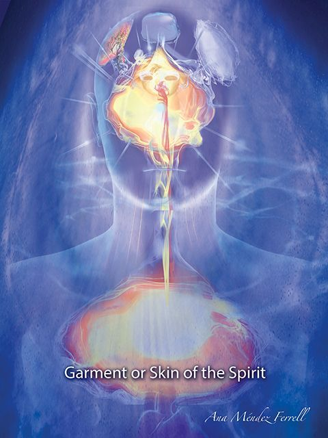

CHAPTER 8 : ORGANS, SYSTEMS AND FUNCTIONS OF THE SPIRIT
We have now seen the external part of our spirit, and how it is seen at first sight, with the golden bowl, the silver cord and its wheels. We will now go to the innermost part, where we find the different organs within our spirit.
1. The Seven Spirits of God
When John the Apostle saw Jesus in all His Glory, he saw Him among seven golden lampstands. These lampstands are very important in order to understand life, light and how our innermost being works, because everything the second Adam’s image is, is what needs to be quickened in our spirit.
Jesus is the life of everything created and the substance our spirit. Every spirit comes from God and returns to God who gave it14.
By Him all things consist, and in Him we live and move and have our being. That life, as described in the Gospel of John is the light of man15. The life of Jesus Christ is what illuminates us to have understanding in our spirit.
When the Tabernacle of Moses was erected, the only piece of furniture that had light was the lampstand with seven arms located in the Holy Place. This symbolized the Holy Spirit, which would be inside every believer after Pentecost.
That is why Jesus moves among the seven lampstands. It means that the Holy Spirit is the one who makes His church live.
Jesus is where the church of His design is.
Then I turned to see the voice that spoke with me. And having turned I saw seven golden lampstands, and in the midst of the seven lampstands
One like the Son of Man, clothed with a garment down to the feet and girded about the chest with a golden band.
...
The mystery of the seven stars which you saw in My right hand, and the seven golden lampstands: The seven stars are the angels of the seven churches, and the seven lampstands which you saw are the seven churches.
Revelation 1:12-13; 20
Now, what is true for the body is true for each one of its members. If the life of the Church is in its lampstand, then our spirit also has its own.
The Spirit of God diffracts or manifests itself in The seven Spirits of God and they are a part of Jesus in His Glory.
They are described in the vision John has of the Throne, in the book of Revelation, as eyes in the midst of The Lamb. The horns represent His absolute Lordship, while the eyes represent the impact of His Spirit upon all the earth.
And I looked, and behold, in the midst of the throne and of the four living creatures, and in the midst of the elders, stood a Lamb as though it had been slain, having seven horns and seven eyes, which are the seven Spirits of God sent out into all the earth.
Revelation 5:6
The Power of His Spirit and the broad gamut of what He Is, are our inheritance, and the internal configuration of who we are.
What the second Adam has is what we children of God have, being born from His genetics and His Spirit.
The Spirit of the Lord shall rest upon Him, the Spirit of wisdom and understanding, the Spirit of counsel and might, the Spirit of knowledge and of the fear of the Lord.
Isaiah 11:2
And from the Throne proceeded lightnings, thunderings, and voices. Seven lamps of fire were burning before the throne, which are the seven Spirits of God.
Revelation 4:5
These seven spirits come to us when Jesus comes to dwell in our lives. However, they are not activated immediately. They begin to ignite as we develop our spirit, allowing Christ to be formed in us.
My little children, for whom I labor in birth again until Christ is formed in you,
Galatians 4:19
If we could see our spirit from the top of our head, we could see the seven lamps located around the golden bowl.
As it is shown in the diagram, the Spirit of the Lord is found at the center of the area of communion. Around it is the conscience (circular area which encloses the flames), wrapped by the wheels of the Spirit (exterior circle). The lamp of the Fear of The Lord rests next to the conscience and is intertwined with wisdom. On the other side, knowledge, intelligence and counsel are interconnected, while the Power of God emanates from the inside out.
Figure 14 - Ignited Lamps within a completely vivified Spirit
Every one of the seven spirits governs and illuminates one or several parts of the spirit, which we will refer to as “organs of the spirit”.
The Anatomy of The Spirit of Man
We will now enter into a marvelous part of our study, where we will be analyzing the whole internal configuration of our spirit.
The following illustration is a drawing where I intended to project the vision of the spirit of man God gave me. The problem I ran into is that our spirit is multidimensional and to try to capture it in a flat plane like this illustration makes it inaccurate.
The organs are volatile and move as if they were masses of shiny smoke that enter into and exit from the different spheres of the spiritual world. As you may understand, it would be much easier to capture it on a special effects-video, but despite this, my drawing will help you understand our configuration.
Communion, conscience, mind and heart are the four main components, or organs inside of our spirit. Aside from these, we have systems that help its functioning.
Among these we find the intuition, the seat of power, the inheritance, the spiritual senses, the motion system or wheels of the spirit, and the spiritual garments or dwelling of the spirit.
Figure 15 - Anatomy of The Spirit of Man
A. Central Organs of our Spirit
- 1.Communion
Communion is the central part of our spirit and is located inside the golden bowl. Previously, as we studied it, we saw some of its various functions. This is the part where the Spirit of God is united with the spirit of man. The fountain of life that nourishes the spirit flows from this place. As we can see in the illustration, communion is surrounded by the conscience and is directly connected to the heart of the spirit, and to the mind through spiritual conduits.
The spirit that has been vivified by Christ, and has been born again, has all of its parts connected to the communion organ. Everything that comes to us from God is established in this place first, and then rises up or is projected to other parts of the spirit.
In the case of a recently converted person, God begins the process of awakening the different parts of the spirit that have been dormant because of sin. He will begin to illuminate and awaken every part from this place of communion.
In the case of an unconverted person, the spirit is completely separated from God and is dead, as far as having communion with Him. However, there are other functions that remain alive in all human beings and we will analyze them later on.
2. The Conscience
The conscience is a very sensitive part of our spirit, and it surrounds communion, the heart, and both the spirit and the soul. It is also connected to wisdom and understanding, through spiritual conduits, and to The Fear of The Lord in our inner lampstand. Although sin turned off this candlestick from the time of Adam, our conscience remains mostly activated so we can know right from wrong.
For God knows that in the day you eat of it your eyes will be opened, and you will be like God, knowing good and evil.”
Genesis 3:5
Figure 16 - The Conscience
These are the eyes, that illuminate or give understanding and discernment to our conscience. This is one of the few parts of our spirit that is awake within us, whether we are believers or non- believers. We are all born with the God given ability to discern what is good and what is not.
(... for when Gentiles, who do not have the law, by nature do the things in the law, these, although not having the law, are a law to themselves,
who show the work of the law written in their hearts, their conscience also bearing witness, and between themselves their thoughts accusing or else excusing them)
Romans 2:14-15
When man continuously sins, a hardening of the conscience takes place and causes him to be more and more desensitized to the will of God, thus producing dense vails of cauterization. Having this particular lamp extinguished will inevitably lead to the heart becoming a heart of stone.
To the pure all things are pure, but to those who are defiled and unbelieving nothing is pure; but even their mind and conscience are defiled.
Titus 1:15
speaking lies in hypocrisy, having their own conscience seared with a hot iron,
1 Timothy 4:2
Unbelief, hypocrisy and lies, as these verses show, lead to the hardening of the heart in the part that surrounds it, which is the conscience. This is the condition of the soul, which has taken over, and no longer hears the inner voice that wants to keep him from doing what is wrong.
These hardened veils of the conscience are what are referred to as the foreskin of the heart or being stiff-necked.
Therefore circumcise the foreskin of your heart, and be stiff-necked no longer.
Deuteronomy 10:16
The conscience, being surrounded by the place of communion, is also a door into the knowledge of God and into the understanding of His precepts.
When we convert with our heart, the veil or foreskin is removed, allowing the divine seed to enter and be established in the area of communion. In that moment, the lamp of The Fear of The Lord is ignited and with it, also the rest of the lamps, starting with the central one which is the Spirit of Yahweh or Jehovah.
But even to this day, when Moses is read, a veil lies on their heart.
Nevertheless when one turns to the Lord, the veil is taken away.
Now the Lord is the Spirit; and where the Spirit of the Lord is, there is liberty.
But we all, with unveiled face, beholding as in a mirror the glory of the Lord, are being transformed into the same image from glory to glory, just as by the Spirit of the Lord.
2 Corinthians 3:15-18
When we genuinely receive the Spirit of God in our golden bowl, we are exposed to the light, which transforms us in the measure that we see God’s Glory. This way our lamps are lit.
Now we are ready for God to inscribe His laws within us to walk in righteousness, according to His will.
Then I will give them one heart, and I will put a new spirit within them, and take the stony heart out of their flesh, and give them a heart of flesh,
Ezekiel 11:19
This has become a sensitive, flexible and teachable heart that the Father can train and counsel in order to form us as His true children.
I will bless the Lord who has given me counsel; my heart also instructs me in the night seasons.
Psalms 16:7
When the lamp of “The Fear of God” is lit, the lamp of wisdom is also ignited, since both lights work hand in hand.
The fear of the Lord is the beginning of wisdom; a good understanding have all those who do His commandments. ...
Psalms 111:10a
B. The Lamp of the Body
The conscience, which surrounds communion, is what is referred to as the “Lamp of the Body” and it determines the level of light in a person. This is what Jesus was referring to when He talked about our “eyes.” He was not talking about our physical eyes; He was talking about a part in our inner being that determines how much light or how much darkness is in us.
“The lamp of the body is the eye. If therefore your eye is good, your whole body will be full of light.
But if your eye is bad, your whole body will be full of darkness. If therefore the light that is in you is darkness, how great is that darkness!
Matthew 6:22-23
And why do you look at the speck in your brother’s eye, but do not consider the plank in your own eye?
Or how can you say to your brother, ‘Let me remove the speck from your eye’; and look, a plank is in your own eye?
Hypocrite! First remove the plank from your own eye, and then you will see clearly to remove the speck from your brother’s eye.
Matthew 7:3-5
A corrupted conscience, either through sin, unbelief, soul wounds, or religiosity sees everything as bad. His conscience has become a persecutor of others and is cauterized from giving or receiving true love.
To the pure all things are pure, but to those who are defiled and unbelieving nothing is pure; but even their mind and conscience are defiled.
Titus 1:15
C. The Mind of the Spirit
This is one of the most important parts of our spirit, where the majority of our lamps are found.
An awakened spirit grows until the Mind of Christ is totally formed in him. As we said before, everything concerning God, His knowledge, revelation and all of what His thoughts imply, rises into the area of communion towards the spiritual mind.
From this place the designs and hidden treasures of God rise up in the form of revelation or illumination.
1. Love is the Power that awakens the Mind of the Spirit
When we are exercised in the love and the knowledge of God, by faith, He opens up His mysteries and His best kept secrets.
that their hearts may be encouraged, being knit together in love, and attaining to all riches of the full assurance of understanding, to the knowledge of the mystery of God, both of the Father and[a] of Christ, in whom are hidden all the treasures of wisdom and knowledge.
Colossians 2:2-3
Knowledge without love leads to vanity and that is why God reserves His most precious jewels for those that truly love. To love does not mean being pleasant and loving with each other or with God himself.
To love means having the same nature as the Father who gave His only son for us. Love is filled with justice, sacrifice, generosity, and denial of ourselves.
Love is the holiness of God manifested, and without love, there is no holiness.
The waters of life flow from our spirit to awaken our internal being. Love is the fire that ignites our lamps. It is the light that brings forth the understanding and opens the eyes of the spirit.
The light, that love produces radiates through the conscience, seeing others with grace and favor, just like God saw us.
For the love of Christ compels us, because we judge thus: that if One died for all, then all died; and He died for all, that those who live should live no longer for themselves, but for Him who died for them and rose again.
Therefore, from now on, we regard no one according to the flesh. Even though we have known Christ according to the flesh, yet now we know Him thus no longer.
2 Corinthians 5:14-16
that He would grant you, according to the riches of His glory, to be strengthened with might through His Spirit in the inner man, that Christ may dwell in your hearts through faith; that you, being rooted and grounded in love, may be able to comprehend with all the saints what is the width and length and depth and height — to know the love of Christ which passes knowledge; that you may be filled with all the fullness of God.
Ephesians 3:16-19
To try to receive and understand the mind of Christ without being grounded in all forms and outreach of love, is impossible because this is the fountain of all knowledge.
2. The Different Parts of the Spiritual Mind
In order to make our study more comprehensible, I will separate the different components of the mind into 6 sections:
a. Organs of Knowledge
b. Creativity
c. Language
d. Spiritual Senses
e. Intuition
f. Inheritance
g. The Seat of God´s Power
a. Organs of Knowledge
I will separate these types of organs in two categories. The first is a group of organs that operate by interacting with one another. This group is composed of the understanding, science, intelligence, and wisdom and they are an essential part of the spiritual mind.
The second is the imagination, which serves as an instrument to the first.
1. Understanding, Science, Intelligence and Wisdom
The understanding is the organ that receives light and revelation from the area of communion. It decodes it so that our natural mind can express it in the form of knowledge. Understanding relies on spiritual science, wisdom and intelligence to lead us into “all revealed truth".
Figure 17 - The Mind of The Spirit and its Components
When we receive a vision, a dream, a Rhema16 word or a scripture that resonates in our spirit, it rises to the area of understanding to be processed.
For example, in the case of dreams that come from God, there are some that can be complicated due to their symbolism. The interpretation must come from God so that we will not make a mistake.
Inasmuch as an excellent spirit, knowledge, understanding, interpreting dreams, solving riddles, and explaining enigmas were found in this Daniel, whom the king named Belteshazzar, now let Daniel be called, and he will give the interpretation.
Daniel 5:12
As we wake up and meditate on the dream, it can be confusing at times, but we know if we persevere in inquiring the interpretation from God, He will give it.
The dream that originated in the area of communion to reveal a mystery or to warn us of something, rises up through the conduits of revelation and enters into the understanding to be interpreted. It is then processed and suddenly, “the light comes on,” and we are able to understand what God wanted to say.
The same thing happens with an invention that comes from heaven. At first we vaguely perceive it. We cannot see all of its form and all of its parts with clarity, but when we meditate on it, we capture it completely.
The prophetic gifts of the Spirit of God operate in these areas: word of knowledge, word of wisdom and prophecy.
The enemy is extremely interested in veiling this area of our spirit because this is where Christ and His mysteries are revealed to us. When he perceives sin, unbelief or a mental and religious Christianity, he immediately establishes a veil that blinds the understanding.
whose minds the god of this age has blinded, who do not believe, lest the light of the gospel of the glory of Christ, who is the image of God, should shine on them.
2 Corinthians 4:4
Many who call themselves Christians have a certain amount of understanding regarding salvation, but they are unable to see Christ in His Glory as the answer to all of their problems here on earth. They live in unbelief because their hearts have never been genuinely converted.
But their minds were blinded. For until this day the same veil remains unlifted in the reading of the Old Testament, because the veil is taken away in Christ. But even to this day, when Moses is read, a veil lies on their heart. Nevertheless when one turns to the Lord, the veil is taken away.
2 Corinthians 3:14-16
2. Imagination
The imagination is the visual screen of our spirit. It is directly connected to the area of communion, understanding, and creativity in the spirit. In the soul, it is connected to the mind and
the heart. It receives the visual images we perceive in our inner being either from God, from the enemy, or from our flesh.
Those who have a pure heart receive visions and dreams from God.
That is where we can see God through the Holy Spirit.
Blessed are the pure in heart, for they shall see God.
Matthew 5:8
A little while longer and the world will see Me no more, but you will see Me. Because I live, you will live also.
John 14:19
A perverse heart and mind will conceive evil imaginations.
The wealth of the rich [is] the city of his strength, and as a wall set on high in his own imagination.
Proverbs 18:11 YLT
And you have done worse than your fathers, for behold, each one follows the dictates of his own evil heart, so that no one listens to Me.
Jeremiah 16:12
As long as a heart is not purified with the knowledge of truth, it will inevitably send corrupted and deceitful images to the imagination.
The saying, “everything is the color of the crystal with which it is seen” clearly applies to the heart, and how it perverts truth based on the images that come from the memory.
A person that has been betrayed will imagine that no one in the world is worthy of his or her trust. Another person, trained in believing in the end of the world, will imagine all sorts of worldwide calamities.
Someone suffering from a trauma will see all kinds of things that terrorize him or her on their spiritual screen.
The imagination is extremely powerful, and because it is linked to the heart and to memory, it exerts a great deal of influence on our will. There are times when God asks something difficult of us, intending to break a certain thought structure or behavior. At that point, the imagination will send images of pain and fear to keep us from taking that step.
For example, God wants us free from medicine, and asks that we stop taking a certain one. Fear, stemming from the fallen soul sends signals to the imagination, and the person begins to fabricate an entire story in their mind about how the body will be destroyed by lack of medication.
The spirit is willing, but the flesh that is weak, takes over the imagination and the will in setting up all kinds of obstacles.
If the spirit overcomes and stands on the Truth, it will send a victorious projection, full of faith to the imagination.
Both accurate and inaccurate Biblical teaching causes people to have visions that have to do with the form of thinking they were indoctrinated with.
Normally, when people are developing their spiritual senses, these will be affected by the way they think or believe.
A person that upholds a certain doctrine will have dreams or visions in relation to that doctrine. One who has never heard of that theory will not see anything related to that.
What I believe is projected in my imagination. Everyone is, has, and receives what they decide to believe.
That is why it is so important to have a personal and direct revelation of Christ in our lives, and not based on someone else’s revelation, no matter how great it may seem to us.
I believe it is very important that we understand that our imagination must be completely consecrated to God. We must close all connections to the fallen heart and the corrupted memory.
Later, when we study the doors of the spirit, we will learn how to protect this organ so that it will be used only by the Spirit of God.
The majority of the dreams that come from God, as well as those that have been infiltrated by the devil, full of lies and oppression, are projected on this screen. The screen also receives the dreams that come from our own soul, which is continuously trying to express itself.
b. Creativity
This is one of the parts that are mostly activated when the spirit has awakened, since God is essentially a creator.
While the spirit is in a state of sleep, the soul takes on the creative function. God, in His immense love, has given both believers and non-believers the ability to create and invent great things. When He made us in His image and likeness, He placed extraordinary abilities within us, and many of these remained after the fall, including this one.
The greatest inventor in the universe is God, and throughout the ages He has been revealing science, technology, as well as music and art to man.
Unfortunately, the soul that does not know the Lord will use all of this for a selfish end, to exalt itself, to make great amounts of money and in many cases for plans of evil.
If all technological, scientific and artistic advances were in the hands of the Sons of God, the world would be different, and one day it will be. What is important to understand right now, is that the majority of what man has accomplished has been through people that did not have God as their Lord; now imagine what we could accomplish with a spirit united with the Creator.
Creativity is an unending river of wisdom, intelligence and understanding. It is the fountain out of which all beauty that crowns heaven and earth flows from. It is where we can feel and touch God, where we can immerse ourselves in the wonderful torrents of music and splendor coming out of Him.
It is the heartbeat of life itself that continuously renews and transforms itself, leading us to create a society that is in a constant state of evolution and change. When we stop creating, we begin to die.
That is why monotony, and the rigid, restrictive religious structures and systems of the world begin to kill our spirit. Creativity is our vital essence and it continuously seeks to innovate and invent from the simplest forms, from creating a happy moment, to the infinite quest to conquer all of our dreams.
This is the place where God sends His designs, His inventions and everything that has to do with creating something. It is the laboratory of the spirit and the telescope to search out and penetrate into the most extraordinary experiences with God.
This is the converging point, where various currents of the spirit stem from communion, wisdom and intelligence. From that point, these concepts rise into the imagination and are then processed by understanding.
In order to produce what comes from the heart and the intelligence of God, we must have a clean heart. When we analyze the heart, we will see the tremendous influence it has when it comes to either opening or blocking what comes from our spirit.
When Jesus said, “Blessed are the pure in heart, for they will see God,” He was not only referring to the revelation of His image, but to everything He is.
God has honored me with His creativity to paint and create all kinds of printed or cinematographic art. This has led me to meet many graphic artists who have a heart to create for the Kingdom of God and to use their talents for His Glory.
Unfortunately, I have run into a very common problem. Wanting to create for God does not simply mean having a desire to do so and getting started. Creativity must be revealed by God, and it is intimately related to the condition of the heart. The more freedom and purity in the person’s soul, the more the torrents of revelation to create will abound. On the other hand, if the soul is not free and pure, conflicts and darkness within the soul will continuously emerge in the works of these artists.
c. Language
This is one of the areas I am most passionate about since my heart overflows with a desire to communicate the Kingdom of God to the nations in their own language.
Language is clear evidence that man does not come from spontaneous creation or that man has evolved from a primate.
We speak and communicate because God is a God that speaks, and has placed within man the ability to express thoughts and feelings through the means of words. Jesus Himself is The Incarnate Word or “The Word” made flesh. Everything was made through “The Word,” which brought all things from the invisible to the visible.
And “GOD SAID…and it was.”
Language comes from the spirit, and it is in that place that every word that comes out of our mouth flows, whether we are believers or not.
The Miracle of Speaking a Language
When we are born in this world, our spirit, which comes from God is complete, but the soul is in a state of development. Part of it was formed inside our mother’s womb and the other is formed through culture and the information we receive. Our parents and the society where we were raised will be important factors in the development of our soul.
During this process, the spirit sends the soul all elements required for storing, decoding and understanding the words we hear.
During the first years of life, our soul is catching and storing all the words that are spoken around us.
The spirit then sends the structure of this language to the soul through revelation. In order to speak, the baby will not have to study grammar or the proper organization of a phrase, or need to know if it is in past tense, subjunctive tense, conditional or any kind of grammatical tense. This is revealed by his spirit.
God has supernaturally given me the ability to speak six languages. I received the majority of them through the Holy Spirit in the blink of an eye, while I preached on a foreign platform.
These miracles caused me to focus my attention on this extraordinary gift, God has given man.
All languages were given to man in a split second during the confusion God sent to the builders of the tower of Babel. This was done to interrupt satan’s plans to bring the world into one agreement with him, which has always been his intention17.
Also, on the Day of Pentecost, God gave the disciples in the upper room, the languages of the world in a split second, so that they could take the Gospel to all nations.
And when this sound occurred, the multitude came together and were confused, because everyone heard them speak in his own language.
Acts 2:6
If we observe, in both cases, languages were given by God in a split second. This tells us that languages are first received in the spirit, and not in the mind. The mind reasons, but the spirit flows. When we speak, we do not stop and think whether we need to place the noun first, then the verb and then the predicate at the end. We simply speak. It is like a river that flows out of us, and that flow can only come from the spirit.
The mind is able to memorize a poem a play or a scripture, and can analyze and determine the best way to write a certain phrase in a book or a brochure. But, that is not what gave us the ability to speak when we were children.
Now going back to babies, have you ever wondered why a baby who was always spoken to in the second person, as in referring to him as “you,” begins to speak in first person saying, “I want …”? How does he know how to conjugate a verb? It is easy for him to associate a certain object with a word, but the miracle is much greater than that.
After the spirit deposits all the words being heard in the storage place for language, it begins to form a structure in the mind where it places all the words. This structure contains grammar, which will aid the baby in putting phrases together, and eventually speaking. Every language has a different structure that must be translated from the spirit to the natural mind.
Generally, in the area of language, the spiritual mind and natural mind are united. This is one of the parts of the spirit that remains active despite the vital parts of the spirit remaining dormant.
Once the words and the structure are in position, the understanding decodes them, revealing their meaning to our natural mind. In that moment, the baby or the person that wants to speak a new language begins to do so.
If your spirit has been awakened by God and you want to speak a foreign language, ask the Holy Spirit for it, believing.
A good exercise for receiving a new language is reading the Bible in the desired language. Choose a verse you know by heart and read it several times in the foreign language, with an open heart. You will be surprised how the understanding begins to decode a word and then another, until you are literally understanding it completely.
It is important to start speaking even if we sometimes make up words or deform them just like a baby does. In order to learn to walk you had to stand up and take your first steps and you did the same thing when you began to speak.
These first words will begin to connect your hearing with your voice and with the understanding. If you only repeat these words in your mind, that structure will not be formed. We must speak.
d. Spiritual Senses
The soul perceives the natural world and its reality through physical senses. In the same way, the spirit perceives the invisible and eternal reality through spiritual senses.
1. Spiritual Eyes
The Bible speaks of several spiritual eyes in our spirit. I only placed one pair of eyes in this illustration since I was limited to designing something multidimensional in plain form, and I wanted to make it more understandable for you.
Eyes of Understanding
The eyes of your understanding being enlightened; that you may know what is the hope of His calling, what are the riches of the glory of His inheritance in the saints,
Ephesians 1:18
God called Paul, and anyone else who calls himself a minister of God, to open the eyes of their understanding, so people will be able to leave darkness and come to the light.
But rise and stand on your feet; for I have appeared to you for this purpose, to make you a minister and a witness of the things, which you have seen ...
To open their eyes, in order to turn them from darkness to light, and from the power of satan to God …
Acts 26:16a; 18a
These eyes are directly connected to the conscience and the understanding. Their objective is to cause people to clearly see their condition and understand their need for salvation and reconciliation with God. The eyes are opened when people seek God with a sincere, contrite and humble heart. Many people, who apparently follow Christ, still have their eyes closed because their heart has never truly been converted, but rather they just follow a religion. This is what Jesus referred to when He said: seeing they do not see, and hearing they do not hear18.
Eyes to see into the invisible Dimension
Our spirit was created with eyes capable of seeing in the dimensions of God’s Kingdom. These eyes are opened with “the new birth”, and are perfected as we exercise them prophetically.
Then he took up his oracle and said: The utterance of Balaam the son of Beor, the utterance of the man whose eyes are opened,
The utterance of him who hears the words of God, who sees the vision of the Almighty, who falls down, with eyes wide open
Numbers 24:3-4
The Seven Eyes of God within our Spirit
And I looked, and behold, in the midst of the throne and of the four living creatures, and in the midst of the elders, stood a Lamb as though it had been slain, having seven horns and seven eyes, which are the seven Spirits of God sent out into all the earth.
Revelation 5:6
Wherever the seven spirits of God are, so are His eyes, which help us see and understand the ways of God.
2. Spiritual Ears
This is a very important organ because God communicates through it. The ears are found in the back of our spirit, in the nape zone and are connected to the area of communion, to the conscience and to the heart.
Your ears shall hear a word behind you, saying, “This is the way, walk in it,” Whenever you turn to the right hand or whenever you turn to the left.
Isaiah 30:21
This is the type of ear Jesus was referring to when He said:
He, who has an ear, let him hear what the Spirit says to the churches.
Revelation 2:29
When the ear is awake, it leads to The Fear of The Lord, as well as seeking of His unfathomable riches and revelation. Faith, which is found within the area of communion, is activated and strengthened when we hear with an open heart.
So then faith comes by hearing, and hearing by the word of God.
Romans 10:17
We will see this in more detail when we study the heart.
3. Spiritual Taste
Very few people have developed this sense. John the Apostle ate the little book given to him by the angel and it was sweet in his mouth and bitter in his stomach19.
Prophet Ezekiel ate the scroll the Lord gave him and experienced the same thing20.
My husband Emerson fasts up to 200 or more days per year, and has told me that angels have descended with heavenly food to strengthen him and he describes it as liquid light with a sweet taste.
4. Spiritual Smell
God gifted our spirit with the ability to smell in the spiritual world. It is one of the senses frequently developed by those who have the gift of discernment of spirits.
Foul spirits stink just like sin, which carries death. God trains us so that we can identify the spirits.
Those who have come out of strong sexual sin easily identify another person that has been in a similar situation by their smell. The same thing occurs with those who have come out of drugs or the occult.
On the heavenly side, there are wonderful aromas that manifest with the presence of God. Genuine worship that comes from the spirit produces fragrances that are extremely pleasant to God.
Jesus Himself is called the Rose of Sharon and the Lily of the Valley because of the high frequency contained in the aromatic oils that come from these flowers.
The aroma of these flowers, as well as spikenard, have such an impact on the spiritual realm that even the demons manifest when they smell these oils.
When Mary broke the alabaster jar filled with spikenard perfume, the demons within Judas manifested, and he left that place to betray Jesus.
My husband, an expert in aromas, wrote a book called, “The Breath of God over Essential Oils.” In this book, he explains the powerful revelations regarding heavenly aromas and their influence in the spiritual realm.
God is a God that loves and delights in aromas and that is why He determined there would be a special anointing and a ministry of the “perfumer”, responsible for the holy fragrances.
This ministry understood the spiritual impact contained in these aromas, as well as the method of mixing them according to the Holy Spirit.
This is not the type of perfume created for us to smell good or to be more attractive to the opposite sex, as we find today in the marketplace.
And you shall make from these a holy anointing oil, an ointment compounded according to the art of the perfumer. It shall be a holy anointing oil.
Exodus 30:25
This revelation regarding the aromas of God is very important because it connects us to the fragrances and frequencies of heaven, and it causes our spirit to become more sensitive.
In the same way a true prophetic worshiper hears the sounds of heaven, the perfumer smells the fragrances of heaven. To God, flowers are not the only ones with fragrance; love, obedience, generosity and sacrifice release a fragrant smell in the spiritual world that rises up to God.
And walk in love, as Christ also has loved us and given Himself for us, an offering and a sacrifice to God for a sweet-smelling aroma.
Ephesians 5:2
Indeed I have all and abound. I am full, having received from Epaphroditus the things sent from you, a sweet- smelling aroma, an acceptable sacrifice, well pleasing to God.
Philippians 4:18
5. Spiritual Touch
Our spirit, just like our body is covered with a sort of a spiritual skin, which we will refer to as garments, or spiritual habitation.
It is what shapes our spirit, and that is why after death, we maintain a spiritual physiognomy. Angels as well as demons, being spiritual beings, have a visible form that distinguishes them from one another.
This spiritual garment begins to take the shape of Christ in the measure we grow in Him, as we are transformed into His very image21.
Paul the Apostle understood the importance of these garments, and he would groan to be clothed in them. They contain the resurrection of Christ, which absorbs all mortality in us.
For in this we groan, earnestly desiring to be clothed with our habitation, which is from heaven,
if indeed, having been clothed, we shall not be found naked.
For we who are in this tent groan, being burdened, not because we want to be unclothed, but further clothed, that mortality may be swallowed up by life.
2 Corinthians 5:2-4
But put on the Lord Jesus Christ, and make no provision for the flesh, to fulfill its lusts.
Romans 13:14

Figure 18 - Clean Garments of the Spirit
Figure 19 - Filthy Garments of the Spirit
These garments determine what is able to penetrate the rest of our being, such as disease, traumatic strokes caused by the iniquity of people that want to hurt us, or attacks from the devil.
“For the Lord God of Israel says that He hates divorce, for it covers one’s garment with violence (Iniquity),” says the Lord of hosts. “Therefore take heed to your spirit, that you do not deal treacherously.”
Malachi 2:16
We observe in this passage how the garments of the spirit are stained with violence or iniquity, making us vulnerable in the spiritual world; that is why the Lord stresses the words: “Take heed.”
When we convert to Christ with all of our heart, we are clothed with His grace and this grants us our salvation, if we stay in Him. However, clothing ourselves with the Lord Jesus Christ implies laboring for inner growth.
My little children, for whom I labor in birth again until Christ is formed in you,
Galatians 4:19
Christ is formed in us as an invincible armor. In order for this to take place we must forge within us the righteousness of God through faith, which is our breastplate and shield. We must also exchange our mind for the Mind of Christ, which is our helmet of salvation.
During Israel’s captivity in Babylon, God visited Joshua the High Priest. The years of captivity in the midst of pagans had contaminated his spiritual garments, and so they needed to be changed for Israel’s restoration to begin. The Lord orders him to remove his old garments and to be clothed with new ones, not because He is interested in an external dress, but because this had to do with what was on the inside.
The garments of the flesh and the fallen soul are filthy rags, and those of the spirit are very elegant rich clothes.
Now Joshua was clothed with filthy garments, and was standing before the Angel.
Then He answered and spoke to those who stood before Him, saying, “Take away the filthy garments from him.”
And to him He said, “See, I have removed your iniquity from you, and I will clothe you with rich robes.”
And I said, “Let them put a clean turban on his head.”
Zechariah 3:3-5
I remember when I converted; the Lord opened my spiritual eyes to see the condition of my soul. It was horrible to see myself through the eyes of God, and to see my garments as disgusting and smelly rags as a result of sin. Seeing myself this way before God’s purity, led me to hate evil, and give myself to Him with all my heart.
We sometimes think of ourselves very differently from the way He sees us. Jesus spoke a very significant parable regarding this, and compared the Kingdom of God to a great wedding.
But when the king came in to see the guests, he saw a man there who did not have on a wedding garment.
So he said to him, ‘Friend, how did you come in here without a wedding garment?’ And he was speechless.
Then the king said to the servants, ‘Bind him hand and foot, take him away, and cast him into outer darkness; there will be weeping and gnashing of teeth.
“For many are called, but few are chosen.
Matthew 22:11-14
The sense of spiritual touch is not just about our spiritual garments. We also have the ability to touch and perceive the spiritual world through it.
The presence of angels can be felt by stretching out our hands and feeling with our spiritual touch. If there is an angel, our spirit will feel heat vibrating in the place where he is. The opposite happens when we encounter spirits of death, they manifests as a cold presence.
c. Intuition
This is the spiritual organ that surrounds our spirit, acting as an antenna or spiritual radar. It is active even if our spirit is dormant in the area of communion with God. It can sense a presence, be it angelic, human or demonic.
Have you ever felt like someone is looking at you or following you? That is intuition capturing it.
These antennas are distributed around our entire spirit. Those who are close to the area of understanding will capture things that have to do with knowing something without ever having studied it or heard of it. We simply know something is a certain way, and we cannot explain it with our natural mind.
We can know what someone else is thinking without necessarily hearing word by word.
Jesus understood intuitively what the religious people spoke in their hearts.
But immediately, when Jesus perceived in His spirit that they reasoned thus within themselves, He said to them, “Why do you reason about these things in your hearts?
Mark 2:8
Intuition will perceive things that occurred in a certain place or that are about to happen. That is why certain people have premonitions even if they are not believers.
The kingdom of darkness usurps this part of the spirit to promote fear and to bring destructive prophecies that never came from God.
When people are not aware of how the Kingdom of God and the kingdom of darkness release their respective prophecies, it is very easy to become confused as to where the information came from.
God communicates with man through the area of communion, but the devil infiltrates through intuition.
One thing that is very important to understand is that there is a layer over the earth that serves as an invisible network, where the kingdom of darkness is continuously sending all kinds of messages of destruction. Hurricanes, earthquakes, wars and plans to destroy the world circulate throughout this network.
When a prophet or someone who is developing their prophetic gifts is not aware of this demonic sphere, they can easily hear words of destruction or fear that their intuition senses. They think that since they have a relationship with God, and the message they are receiving is supernatural, it comes from God, but unfortunately that is not the case.
When God wants to communicate a certain judgment through a prophet, He ALWAYS gives a way out, if the people repent.
A prophecy of destruction without a solution comes from darkness, and not from God. God does not want to destroy the world; He wants to fill it with His knowledge, as the waters cover the sea.
For the earth will be filled with the knowledge of the glory of the Lord, as the waters cover the sea.
Habakkuk 2:14
Nowadays, there are millions of people coming into agreement with plans of destruction from the devil because they ignore the functions of their spirit, and the spiritual spheres that control the world.
It is very important that we be cleansed through the Word of God and that we allow its sword to divide our soul from our spirit. As long as this does not take place, we will consider divine or spiritual, something originating in the soul, which makes it carnal.
For the word of God is living and powerful, and sharper than any two-edged sword, piercing even to the division of soul and spirit, and of joints and marrow, and is a discerner of the thoughts and intents of the heart.
Hebrews 4:12
Inheritance
This part of the spirit was designed in Adam to receive God’s DNA, but it was corrupted due to the fall. Man entered a state of spiritual death and received the seed of the devil. This caused iniquity, stemming from evil, to enter the man’s spirit and be passed on from generation to generation to all human beings.
Figure 20 - Anatomy of the Spirit of Iniquity
Our physical body stores all of the information regarding our physical inheritance in the DNA within the cells. It is like a computer’s microchip, where all the Data is located. DNA determines whether we are born with our grandfather’s eyes, our mother’s mouth, our grandmother’s hair color or our father’s height.
All of this information is physically transmitted from generation to generation. As the cells multiply in the mother’s womb, a body begins to be formed according to the design of said information. A similar model is found in the spiritual body.
There is an area that records all spiritual information that is transmitted to our children and subsequent generations and is known as “iniquity”.
It is very important to put our attention in cleansing of this area of our spirit, and purge our iniquities to receive God’s DNA22.
Therefore, having these promises, beloved, let us cleanse ourselves from all filthiness of the flesh and spirit, perfecting holiness in the fear of God.
2 Corinthians 7:1
Iniquity comes out of the spirit and is transmitted to the body through the lymphatic system. This is a complex network of narrow vessels, valves, channels, nodules and organs. It resembles a net that goes across the entire body, underneath the skin where energy runs through, and where toxins are contained and is our body’s main defense system. Another function is to help protect and maintain the organism’s fluids in order.
I will deal with the interconnection between spirit, soul and body thoroughly. We will then see the complete route iniquity takes to install itself in the body’s organs and bones.
As he clothed himself with cursing as with his garment, so let it enter his body like water, and like oil into his bones.
Psalms 109:18
Figure 21 - Lymphatic System
g. The Seat of God´s Power
There is an area of our spirit where the power of God dwells, which is one of the seven Spirits of God. This area is directly connected to the one of communion and is where the gifts of miracles, healings and creative wonders of God manifest.
Another way to explain it would be the spiritual engine. Samson by example, received his strength in this part of his spirit. It is also where the blast of power came from the hands of Moses to divide the Red Sea. We see this in the description of God’s power coming out of Jesus.
His brightness was like the light; He had rays flashing from His hand, and there His power was hidden.
Habakkuk 3:4
Paul the Apostle also knew this power and he expressed it in the following way.
Now to Him who is able to do exceedingly abundantly above all that we ask or think, according to the power that works in us.
Ephesians 3:20
The apostles had received the Spirit of God when Jesus blew on them before His ascension, however He said:
But you shall receive power when the Holy Spirit has come upon you; and you shall be witnesses to Me in Jerusalem, and in all Judea and Samaria, and to the end of the earth.
Acts 1:8
This tells me that the Holy Spirit can come upon different areas of the spirit and activate them one by one, until we reach His fullness. That is why we see believers with certain parts of their spirit much more developed than others. There are believers who have great intuition or move prophetically, but in the areas of power, they are not very effective. The truth is the gifts of the Spirit come upon different parts of our spirit to develop it in each area.23